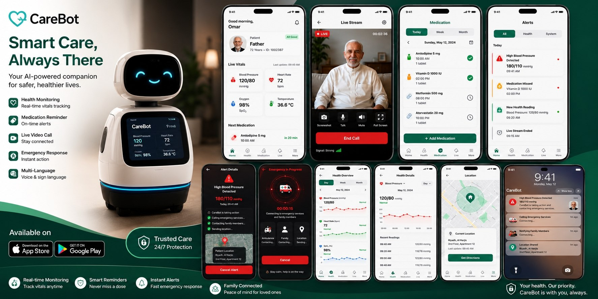

CareBot Project — A Smart Companion for Elderly Care
Overview
CareBot Project
UX/UI Designer
CareBot Project – A Smart Companion for Elderly Care
CareBot is a smart robot designed to assist elderly people at home by continuously monitoring vital signs, reminding them of medication schedules, communicating directly with family through a smart app, and automatically responding to emergency situations by sending notifications and location to children and emergency services.

Key features
- Continuously monitors vital signs.
- Reminds users of medication schedules.
- Enables direct communication with family through a smart app.
- Automatically responds to emergency situations and sends notifications and location to children and emergency services.
Intellectual property
All ideas, designs, interfaces, and systems of CareBot are considered the intellectual property of the project, and have been documented as preparation for registering and protecting the project’s rights in the future.
Role and approach
As UX/UI Designer, I focused on making the robot interface and companion app feel intuitive, reassuring, and trustworthy for elderly users while keeping family communication and emergency response flows clear and reliable.